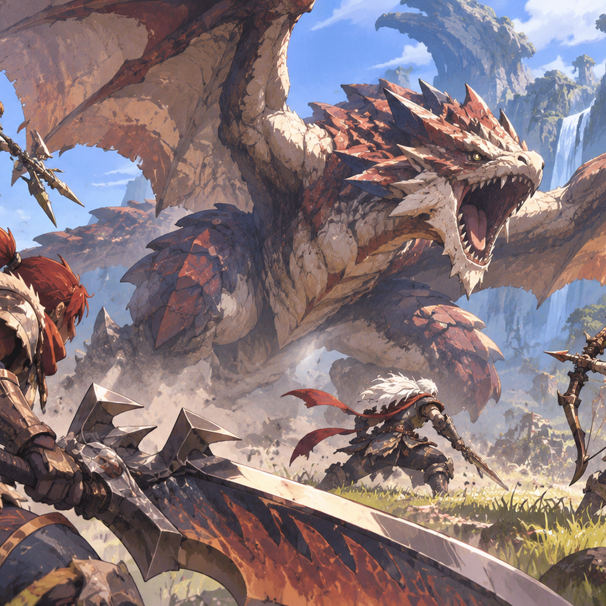
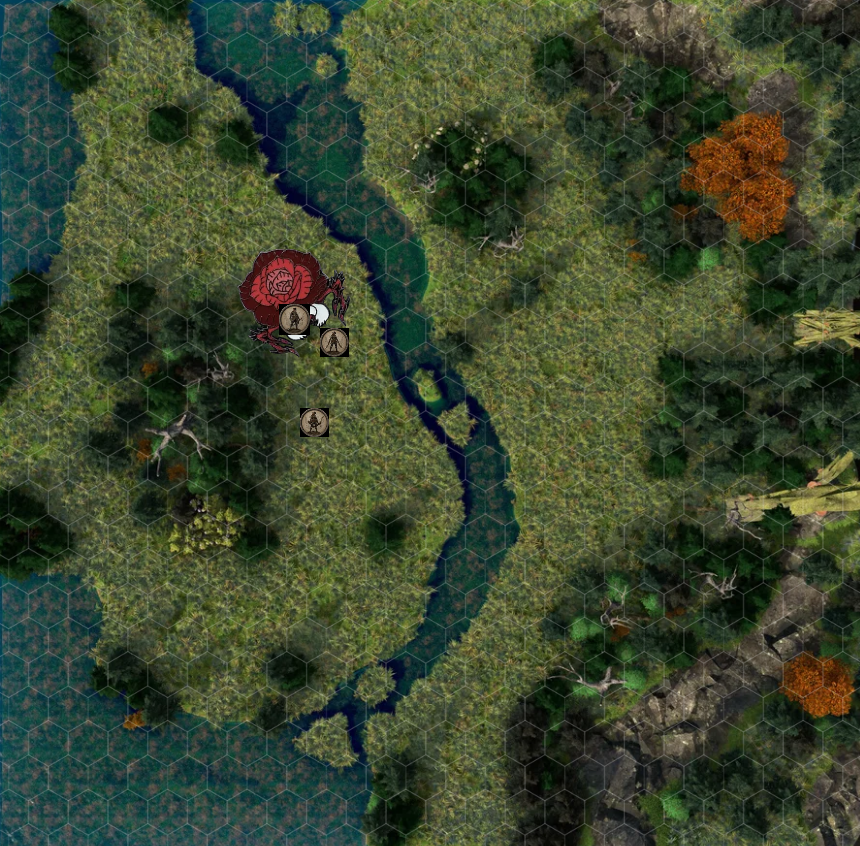
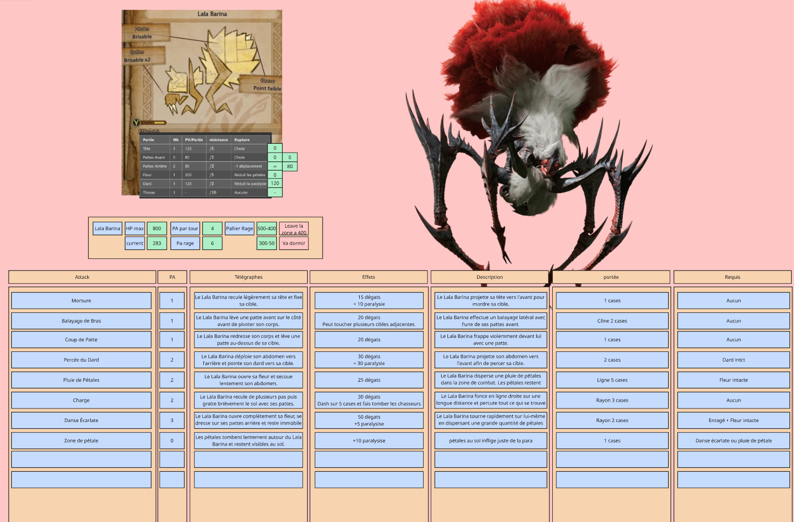
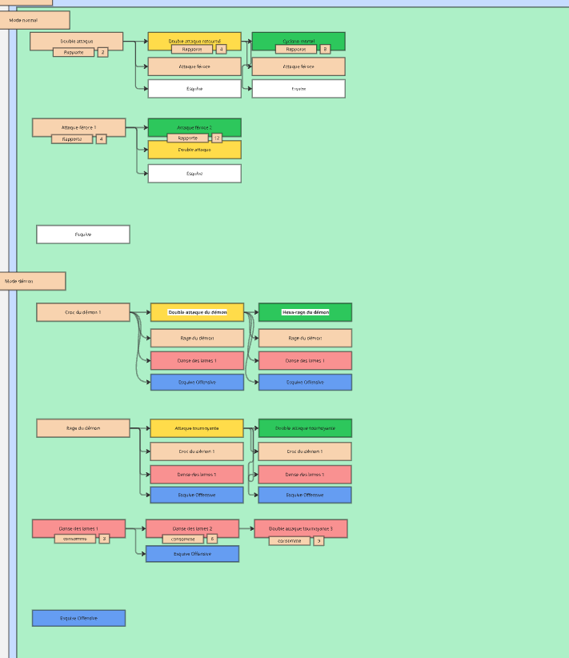
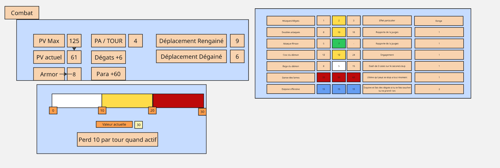
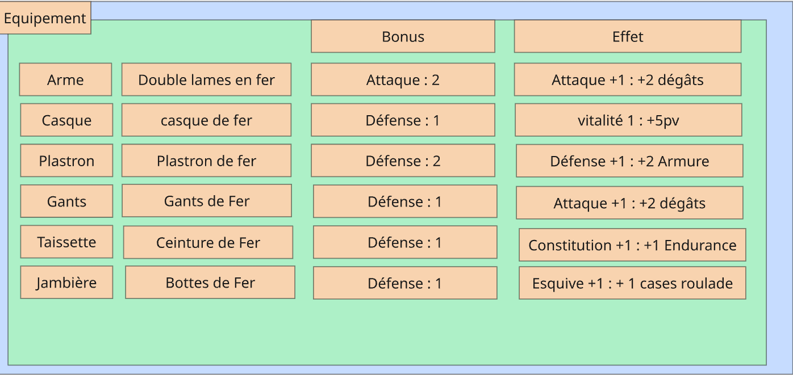
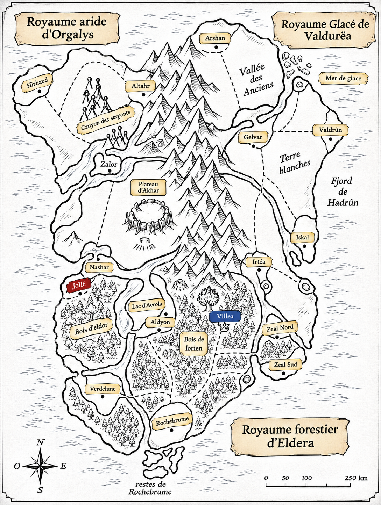

Parcourir
Se déplacer entre les zones en tenant compte des mouvements possibles du monstre.
GAME DESIGN / SYSTEMS DESIGN / TABLETOP RPG
L'expérience de chasse, réinventée autour d'une table.
Un projet personnel de jeu de rôle inspiré de Monster Hunter. Mon objectif : retrouver la préparation, la traque, l'apprentissage des monstres et la progression des chasseurs, tout en adaptant ces sensations aux décisions et à la narration propres au jeu de rôle.
Mon rôle : conception des règles, des monstres, des armes, de la progression et de la campagne.

02 / L'EXPÉRIENCE DE CHASSE
Je souhaitais conserver les grandes étapes de Monster Hunter, mais leur donner une place dans une campagne narrative où les décisions prises pendant une expédition peuvent préparer la suivante.
La boucle complète représente l'objectif de conception. Le premier playtest a porté sur la préparation, l'exploration et le combat.
03 / EXPLORATION & PISTAGE
Mon premier prototype s'inspirait des anciens Monster Hunter : une région composée de 15 zones interconnectées, parcourues par les chasseurs comme par leur cible. Les joueurs pouvaient y entreprendre des recherches pour découvrir des indices et déterminer quelle piste suivre.

Se déplacer entre les zones en tenant compte des mouvements possibles du monstre.
Rechercher des traces, comparer les indices et comprendre l'environnement.
Choisir une direction de traque à partir des informations obtenues.
J'ai constaté que reprendre la structure des anciens jeux ne suffisait pas. Dans un JDR, l'exploration doit faire davantage appel aux descriptions, aux interactions avec le monde et aux décisions des joueurs. Une exploration plus diégétique constitue aujourd'hui une piste de refonte, pas une fonctionnalité déjà finalisée.
04 / COMBAT & MONSTER DESIGN
Je voulais remplacer la lecture des animations et les réflexes du jeu vidéo par un mécanisme de lecture des intentions. Le MJ exécute l'attaque annoncée lors du tour précédent, puis décrit les télégraphes des attaques du tour suivant. Une fois annoncée, l'attaque est engagée.
Le monstre exécute l'attaque précédemment annoncée.
Un cri, une posture ou un mouvement annonce sa prochaine attaque.
Les chasseurs choisissent comment employer leurs quatre PA avant l'exécution.
ÉTUDE DE CAS / LALA BARINA
Lala Barina illustre les interactions entre télégraphes, enragement, paralysie et parties destructibles.
Ses attaques sont associées à des signes préparatoires. Les chasseurs doivent apprendre à les reconnaître pour se repositionner, esquiver ou poursuivre leurs combos.
La rupture de certaines parties modifie ses capacités : par exemple, sa fleur intervient dans l'utilisation des pétales et son dard dans les attaques de paralysie. Le choix de la partie ciblée devient ainsi une décision tactique.

WEAPON DESIGN
Quatre armes sont prévues avec leurs enchaînements et leurs contraintes spécifiques : Long Sword, Arc, Insect Glaive et Doubles Lames. La gestion des PA, des combos et du positionnement doit préserver leur identité dans un système au tour par tour.


05 / ÉQUIPEMENT & PROGRESSION
Le système de progression repose sur la fabrication et l'association de pièces d'équipement. Armes, armures et talents doivent permettre aux chasseurs de personnaliser leur style de jeu et de composer des combinaisons d'équipement adaptées à leurs prochaines cibles.

La conception prévoit plusieurs pièces craftables par monstre et des bonus de set encourageant les associations.
Les ressources, les chasses et les choix des joueurs doivent aussi contribuer au développement du village.
Ces systèmes sont décrits dans la bible ; leur boucle complète n'a pas encore été évaluée pendant le premier playtest.
06 / UNIVERS & CAMPAGNE
La campagne se déroule dans un univers structuré en régions, royaumes et territoires. Le village sert de point d'ancrage à la progression : les expéditions doivent avoir des conséquences sur les habitants, les ressources et les possibilités offertes aux joueurs.

L'univers est pensé pour relier les chasses à une histoire plus vaste. Les monstres possèdent un territoire, des comportements et une place dans leur écosystème.
Au fil de la campagne, les découvertes et les choix des chasseurs doivent influencer l'évolution du village et la situation du monde.
Ce cadre narratif permet d'explorer des enjeux qui dépassent la simple élimination d'une créature.
07 / PLAYTEST & ITÉRATIONS
Un premier playtest avec trois joueurs a permis d'éprouver la préparation, l'exploration et le combat. Mon bilan en tant que concepteur et MJ est provisoire : la structure générale m'a semblé fonctionner, mais plusieurs aspects nécessitent des itérations.
La durée des affrontements correspond à l'expérience recherchée. Le défi consiste à maintenir l'intérêt des décisions pendant cette durée.
Les cycles d'actions sont volontairement proches de Monster Hunter. Je dois encore déterminer si leur répétition reste engageante sur table.
Le déplacement entre zones et les recherches d'indices demandent davantage d'interactions et de narration pour fonctionner dans un JDR.
Je considère qu'une révision importante des valeurs et des interactions est nécessaire avant les prochains tests.
Ces constats sont mes observations de concepteur, et non des retours attribués aux joueurs. Leurs retours détaillés sont encore attendus. La présentation distingue donc les systèmes documentés, ce qui a effectivement été testé et les pistes d'amélioration.
08 / DOCUMENTATION DU PROJET
Le projet est accompagné d'une bible de conception détaillant les intentions de Game Design, l'univers, les systèmes, les armes, l'exploration, le village et les monstres. Une synthèse présente les piliers et la boucle d'expérience du jeu.
DOSSIER DOCUMENTAIRE · ARCHIVE ZIP
Sept tomes de la bible et la synthèse The Hunt, fournis en HTML consultable dans un navigateur. Ces documents reflètent un projet en cours de conception et d'itération.
8 documents HTML · ZIP · 168 Ko
La documentation est fournie dans son état actuel. Certaines règles et valeurs peuvent différer des exemples présentés lors du premier playtest.